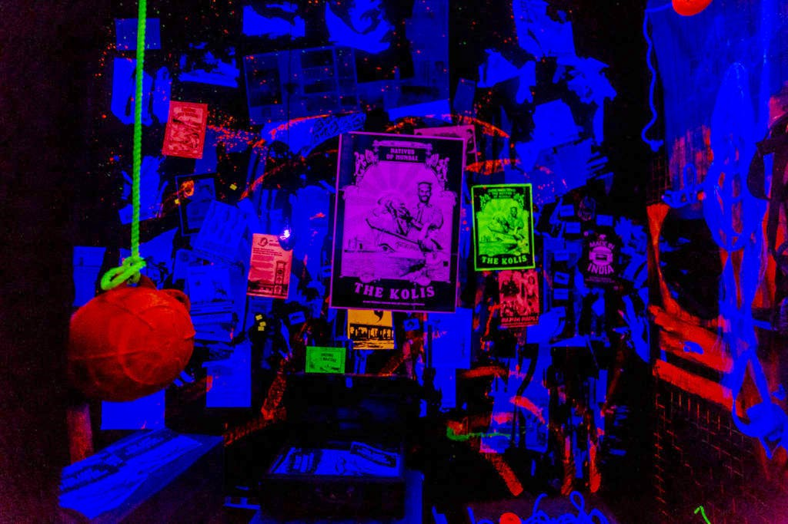
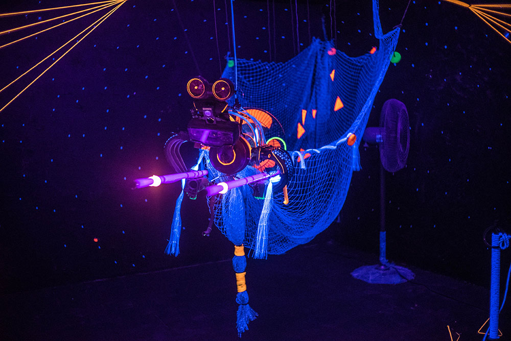

Mumbai · Quicksand · 2017
St+Art Mumbai 2017 Urban Art Festival aimed to reintroduce the citizens of Mumbai to one of its oldest hubs of livelihood — the Sassoon Docks, Mumbai’s first wet dock.
Along with several foreign and Indian artists, Quicksand was invited to create a site-specific public art installation inside a 142-year-old abandoned warehouse, located amidst one of the busiest fishing docks of Mumbai at the tip of Colaba.


The aim of the exhibit was to showcase meaningful artistic expressions of the spirit of the city — entwined with the many activities situated in and around the dock.
The project was led by Quicksand, along with a multidisciplinary team comprising a visual artist, concept artist, product designer, storyteller, and programmer.
Multiple visits were made to the docks to understand the context and physical installation space. These included interviews with the local fishing community — the Kolis — who later became the core of the installation narrative.
The installation was composed of multiple components — mechanical, written, and audiovisual. Storytelling formed the heart of the process and the primary starting point. The story guided the physical manifestation of the concept.
The narrative centered around a speculative future without manual fishing. The protagonist was imagined as The Last Fisherman of Bombay.
Set in a dystopic future, the installation critiqued the rapid urbanisation of Mumbai. A UV-light installation room interpreted a radioactive wasteland the city could become in the not-too-distant future.
The space depicted a submerged room belonging to the last fisherman, looking out at an automated mechanical sculpture — inspired by a drone — engaged in a relentless fishing spree.
A zine was created as a takeaway artifact for visitors, containing speculative storytelling written from the perspective of the last fisherman, extending the experience beyond the physical installation.
The St+Art Urban Art Festival at Sassoon Docks ran from November 11 to December 30, 2017. Guided by its motto, “Art for All”, the festival offered free entry to the warehouse space.
The project attracted an overwhelming footfall of thousands of visitors, including members of the local fishing community, creating a rare intersection of contemporary art, public space, and lived urban realities.